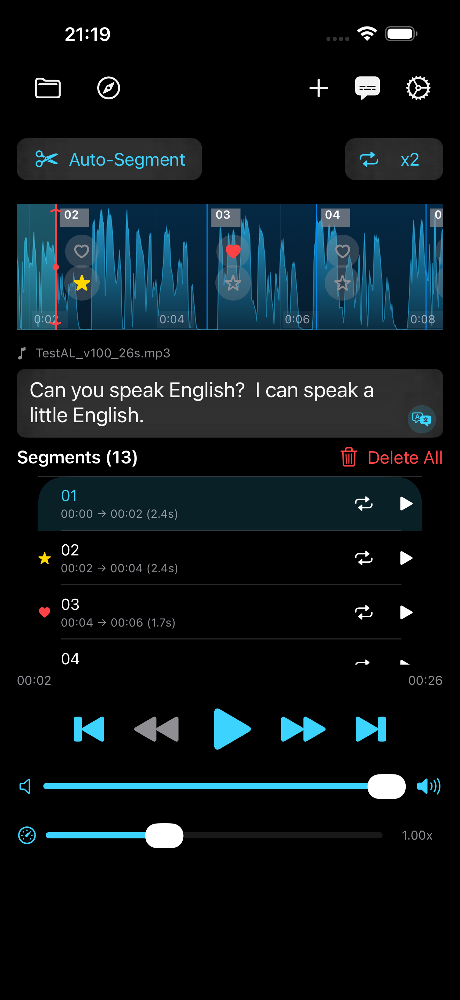
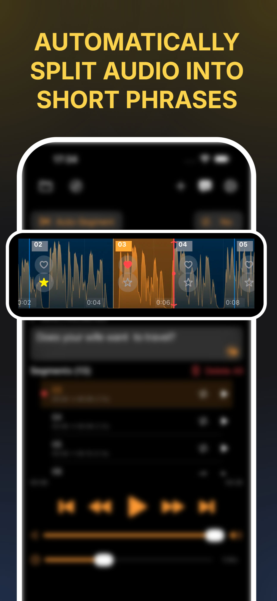
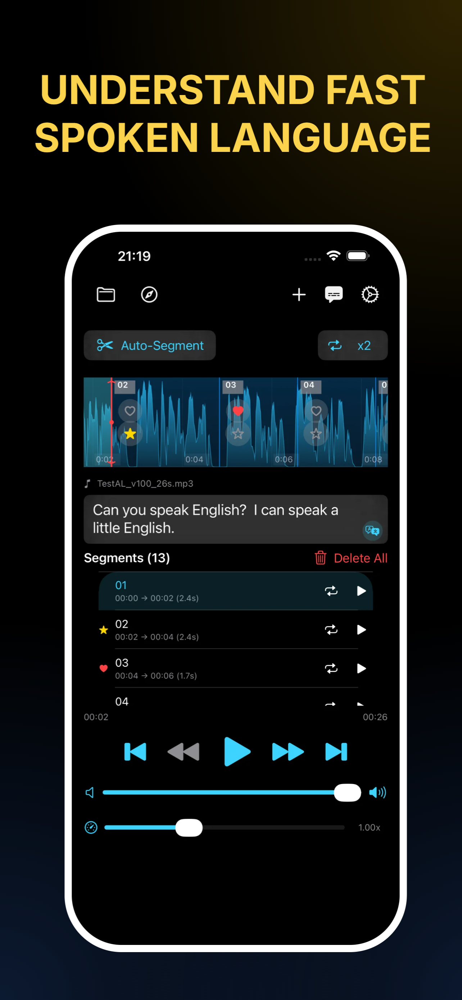

Apprenez des langues grâce au shadowing
Écoutez la parole naturelle. Répétez-la à voix haute. Améliorez votre compréhension, votre prononciation et vos compétences orales avec la méthode shadowing.
Écoutez. Répétez. Parlez avec fluidité.

Qu'est-ce que le shadowing linguistique ?
Le shadowing linguistique est une technique de pratique orale où vous écoutez un locuteur natif et répétez immédiatement ce qu'il dit en essayant d'imiter sa prononciation, son rythme et son intonation. C'est un moyen efficace de développer vos compétences orales et de rendre votre parole plus naturelle.
Contrairement à l'écoute passive, le shadowing vous demande d'écouter et de parler en même temps de manière active. Vous entendez la langue parlée et la reproduisez presque immédiatement, ce qui vous aide à améliorer votre compréhension, votre prononciation, votre rythme et votre intonation. La pratique régulière peut aussi vous aider à retenir plus facilement des phrases naturelles et des structures de phrases.
La méthode de shadowing fonctionne avec n'importe quelle langue. Que vous appreniez l'anglais, l'espagnol, le français, l'allemand, le japonais ou une autre langue, le principe est le même : écoutez activement, répétez ce que vous entendez et apprenez progressivement à parler avec un rythme et un débit plus naturels.
Comment AudioLingo fonctionne
Trois étapes simples pour une pratique linguistique efficace
Écoutez
Choisissez une phrase prononcée par un locuteur natif. Écoutez attentivement la prononciation, le rythme et l'intonation.
Répétez
Répétez la phrase à voix haute juste après le locuteur. Essayez d'imiter au plus près sa prononciation, son débit et son intonation.
Parlez
Parlez en même temps que le locuteur en temps réel en suivant son rythme et son débit. Plus vous pratiquez, plus votre parole devient naturelle.
Pourquoi le shadowing aide les apprenants
Les avantages de l'écoute active et de la répétition de la parole naturelle
Meilleure prononciation
Écouter et répéter des locuteurs natifs vous aide à reproduire les sons, le rythme et l'intonation d'une langue étrangère. Le shadowing régulier peut rendre votre prononciation plus précise et plus naturelle.
Compréhension renforcée
Le shadowing vous entraîne à mieux percevoir chaque son et chaque syllabe. Avec le temps, il devient plus facile de suivre la parole rapide, de reconnaître les mots individuels et de comprendre les locuteurs natifs.
Plus de confiance à l'oral
Prononcer régulièrement des phrases à voix haute vous aide à vous sentir plus à l'aise dans l'utilisation d'une langue étrangère. Le shadowing vous donne une pratique orale active au lieu de vous reposer uniquement sur la grammaire et le vocabulaire.
Fluidité plus naturelle
Le shadowing vous aide à ressentir comment une langue sonne dans une vraie conversation. Vous vous familiarisez avec le rythme naturel, le débit, l'intonation et les caractéristiques courantes de la parole.
AudioLingo en action
Une interface simple et concentrée conçue pour la pratique linguistique


Ce que vous pouvez pratiquer
Quatre compétences linguistiques essentielles à développer grâce au shadowing
Compréhension
Entraînez votre oreille à comprendre la langue parlée naturelle
Prononciation
Pratiquez les sons, le rythme et l'intonation de la parole naturelle
Expression orale
Développez la fluidité en répétant des phrases réelles à voix haute
Mémoire
Retenez les phrases et les structures par la répétition active
Pour qui est AudioLingo
Apprenants
Complétez votre apprentissage linguistique par une véritable pratique de la prononciation et de l'expression orale. Le shadowing vous aide à vous familiariser avec le son naturel d'une langue étrangère.
Voyageurs
Préparez-vous à votre voyage en pratiquant des phrases utiles du quotidien. Développez la confiance nécessaire pour communiquer à l'étranger.
Professionnels
Améliorez vos compétences linguistiques professionnelles et pratiquez les phrases utilisées en réunions, présentations, négociations et conversations de travail quotidiennes.
Pratiquez n'importe quelle langue
AudioLingo fonctionne avec un large éventail de langues
Questions fréquentes
Parlez plus naturellement
Téléchargez AudioLingo et commencez à pratiquer avec la parole naturelle dès aujourd'hui.